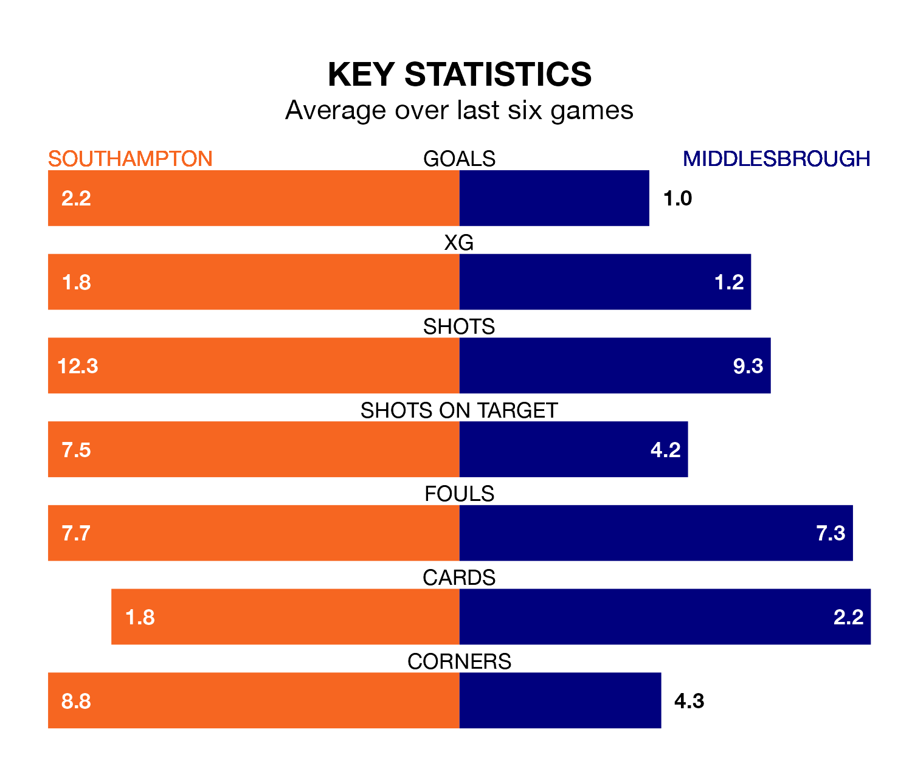

Southampton are heavy favourites to keep all three points at home in Friday's kick-off against Middlesbrough.
The Saints, who sit fourth in EFL Championship with 36 games played, are priced at 1.5 to seal victory at St. Mary's.
Sitting six places and 19 points behind them in the table, Middlesbrough are 4.8 to win with *Betting Company*, while the draw is at 4.2.
With 73 goals in 36 games so far this season, Southampton are the league's third-highest scorers with 2.0 goals per game. And they are conceding fewer than average, letting in 47 goals at a rate of 1.3 per game.
Middlesbrough, meanwhile, are average scorers, with 1.4 goals per game. They have also conceded 1.4 goals per game.
In Adam Armstrong, the Saints have one of the league's most on-form strikers so far this season. He has notched 18 goals in 36 appearances, to sit second in the scoring charts.
The Boro's top scorers, with seven goals each, are Marcus Forss and Emmanuel Latte Lath.
The home team are in mixed form in EFL Championship, with three wins and three losses from their last six games.
With three wins and a draw over that period, the visitors' form is slightly better – they have taken 10 points from 18, compared to Southampton's nine.
Southampton's last match was on March 9, a 4-2 win against Sunderland, with Joe Rothwell (two), Adam Armstrong and Stuart Armstrong getting the goals for the Saints.
Middlesbrough drew 0-0 with Blackburn Rovers last time out, on March 16.
Updated: 12:39 (UTC), 26/03/24